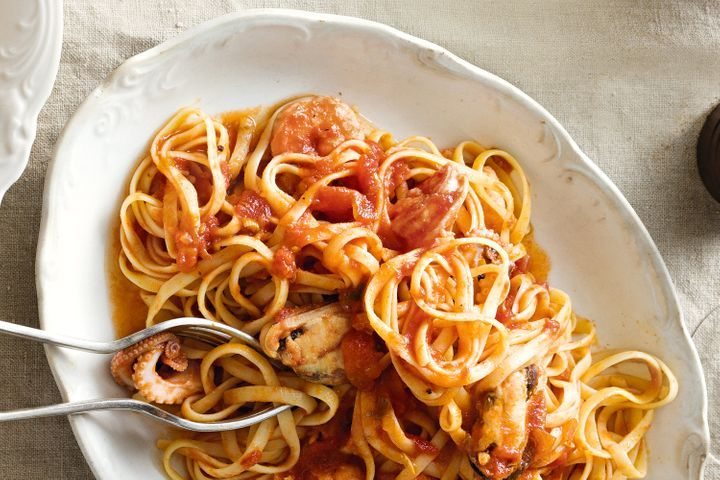

Linguine Marinara

Description
Classic seafood pasta by adding marinara mix to classic Napoletana sauce.
This recipe uses a marinara mix of prawns, crab and octopus to satisfy your tastebuds.
Combined with an al dente linguine, this pasta is sure to make your taste buds salivate.
Ingredients
- Olive oil
- Basil leaves
- Brown onion
- Garlic
- Tomato paste
- White wine
- Diced tomatoes
- Caster sugar
- Prawns
- Crab
- Octopus
- Oregano
- Linguine
- Parmesan
Steps
- Heat oil in a saucepan over medium heat. Add onion. Cook, stirring occasionally, for 5 minutes or until onion has softened. Add garlic. Cook for 1 minute or until fragrant.
- Add tomato paste. Cook, stirring, for 1 minute. Add tomato, white wine and sugar.
- Bring to the boil. Reduce heat to low. Simmer for 20 to 30 minutes or until sauce has slightly thickened. Add marinara mix, oregano and basil. Season with salt and pepper. Increase heat to medium. Cook for 5 to 6 minutes or until seafood is cooked through.
- Meanwhile, cook pasta in a saucepan of boiling salted water, following packet directions until tender. Drain. Serve sauce tossed through pasta.